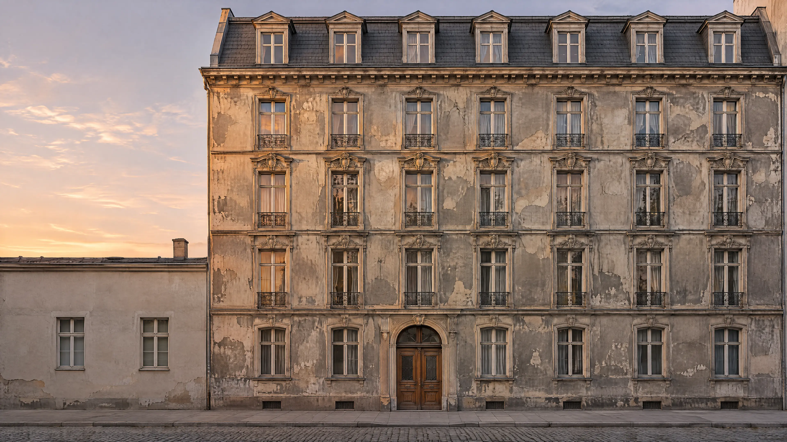
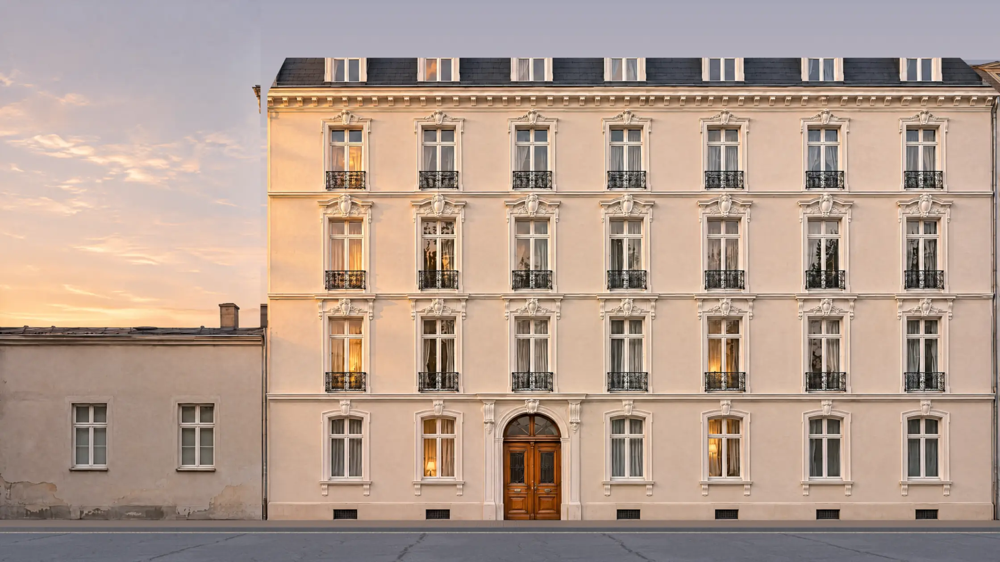
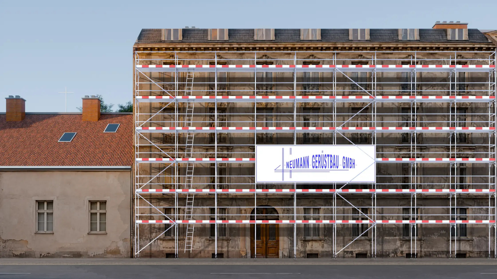

Sicherheit und Qualität
Sicher oben.
Sauber fertig.
Ein Gerüst ist nur so gut wie sein schwächstes Bauteil. Sehen Sie, worauf wir achten, wie wir prüfen und was am Ende bleibt.
01 / Vorher und nachher
Ziehen Sie den Regler.
Dasselbe Haus in drei Zuständen: vor der Sanierung, eingerüstet und fertig saniert.


02 / Sicherheits Check
Neun Punkte, auf die es ankommt.
Tippen Sie auf die Punkte am Gerüst. Jeder steht für eine Regel, die wir auf jeder Baustelle einhalten.

03 / Ablauf und Nachweise
Vom ersten Termin bis zum letzten Bauteil.
- 01
Beratung und Besichtigung
Wir sehen uns die Baustelle an, klären Nutzung, Lasten und Zugang. Kostenlos.
- 02
Planung
Gerüstart, Lastklasse, Verankerung und Aufbaufolge werden festgelegt, bei Bedarf mit statischem Nachweis.
- 03
Aufbau durch feste Kolonnen
Ausgebildete Gerüstbauer mit eigenem Material und eigenem Fuhrpark.
- 04
Prüfung und Freigabe
Vor der Nutzung wird das Gerüst geprüft, das Ergebnis dokumentiert und am Zugang gekennzeichnet.
- 05
Betreuung
Umbauten, Erweiterungen und Kontrollen während der Standzeit, ein Ansprechpartner für alles.
- 06
Abbau
Sauberer Rückbau, das Material geht zurück in unsere Werkstatt und wird dort gewartet.


Sicher geplant ist halb gebaut.
Beratung und Besichtigung sind kostenlos.
Gerüst planen